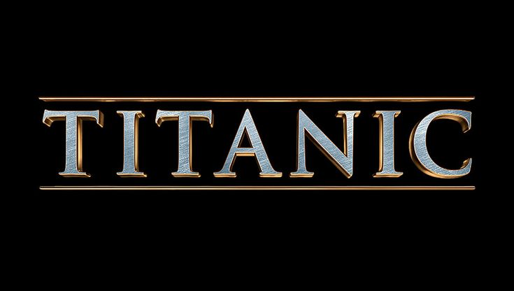
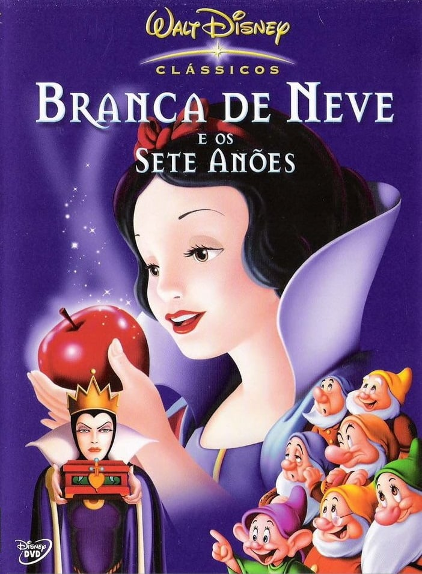

Nossos Filmes com a imagem 3d
conheça nossos filmes para deixar seu dia mais feliz
Filmes
Bela e a fera
titanic
branca de neve
ursinho pooh
filme - bela e a fera

Sinopse do filme
Moradora de uma pequena aldeia francesa, Bela tem o pai capturado pela Fera e decide entregar sua vida ao estranho ser em troca da liberdade do progenitor.
No castelo, ela conhece objetos mágicos e descobre que a Fera é na verdade um príncipe que precisa de amor para voltar à forma humana.
Filme - titanic
Sinopse do filme
Um artista pobre e uma jovem rica se conhecem e se apaixonam na fatídica viagem inaugural do Titanic em 1912.
Embora esteja noiva do arrogante herdeiro de uma siderúrgica, a jovem desafia sua família e amigos em busca do verdadeiro amor.
filme - Branca de neve
Sinopse do filme
A rainha malvada morre de ciúmes da beleza de Branca de Neve e manda mata-la. Logo, descobre que a jovem não morreu e está morando na floresta com sete amiguinhos.
A princesa então é envenenada pela rainha e só o beijo de um príncipe pode salvá-la.
filme - Ursinho pooh
Sinopse do filme
Ió perde a cauda no Bosque dos Cem Acres. Pooh e seus amigos tentem encontrar uma cauda substituta. Logo em seguida, eles encontram um bilhete deixado por Christopher Robin, de que voltaria logo.
O Corujão entende errado e acredita que ele foi capturado por um monstro chamado Voltogo. É o suficiente para que toda a turma elabore um plano para capturá-lo e salvar o amigo.